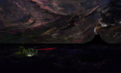
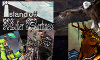

Newsfeed:
Just added blog130 and blog131. Some work needs to be done fixing the RSS feed but I'm sooooo lazy.
Big news! There's now a page for Island Off Outer Dancing as well as an IOOD Press Kit. To accommodate this, the Outer Darkness tab on the navbar now links to an Island Off Outer Duology landing page, where you can get to sub-pages (and to be clear, I felt very clever when I realized I could call the two games that). No blog posts in this one, as I've been extremely busy working on IOODancing. Go wishlist Island Off Outer Dancing! It'll be
Sorry for not updating the site for almost two months :/. I got Bigolas Dickolas'd Legion of Dawn edition and have been sooooo busy. And I've been watching all of American Dad, which, you know, that takes a lot out of someone. Added blog126, blog127, blog128, and blog129. Next site update will be an update to this index page and also an update to the Outer Darkness landing page, once I'm back at my apartment.
Featured:

